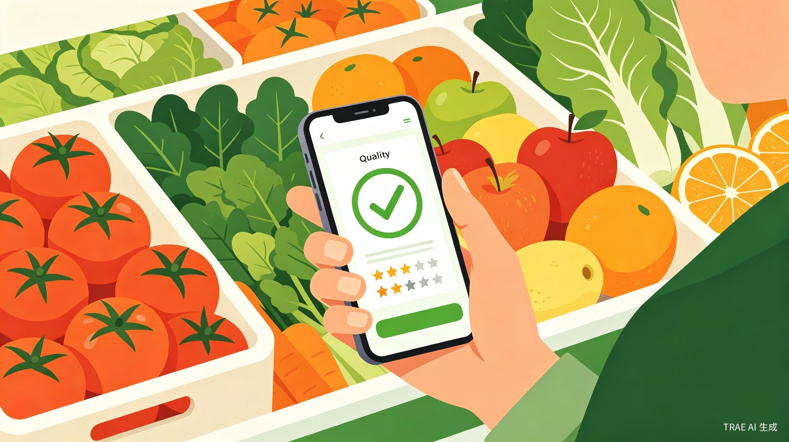

Part 1
创意名称 + 创意介绍
创意名称
鲜识 — 一拍便知鲜不鲜
想解决什么问题
去超市买菜时，很多人挑不好水果和蔬菜——西瓜不知道甜不甜，草莓看不出新不新鲜，鱼也不懂怎么挑。全凭经验或运气，买回家才发现不新鲜、不好吃，既浪费钱又影响心情。尤其是年轻上班族和独居人群，买菜经验不足，常常"踩坑"。
为什么会想到做这个
我自己也经常在超市对着水果犹豫半天，拍了照发朋友圈问朋友"这个能买吗"。后来想，如果手机能直接告诉我答案就好了。AI 视觉识别技术已经非常成熟，用在"帮人挑菜"这个接地气的场景上，既实用又有意思，能让科技真正走进日常。
大概是什么产品
一款微信小程序，打开即用、无需下载，用户对准食材拍一张照片，AI 自动识别品类、评估新鲜度，并给出选品建议和推荐食谱。
Part 2
目标用户及痛点
面向哪些用户
核心用户：20-35 岁的年轻上班族、独居青年和"厨房新手"。他们开始注重饮食健康，但买菜经验不足，不知道怎么挑选优质食材。
扩展用户：注重健康的家庭主妇/煮夫、健身人群（需要挑选优质蛋白和蔬菜）、以及偶尔做饭但对食材品质有要求的用户。
扩展用户：注重健康的家庭主妇/煮夫、健身人群（需要挑选优质蛋白和蔬菜）、以及偶尔做饭但对食材品质有要求的用户。
在什么场景下使用
- 在超市/菜市场货架前，对着想买的蔬菜水果拍一张照，快速判断品质
- 买回食材后，拍照获取推荐食谱和食用方法
- 不确定某种食材是否新鲜时，拍照让 AI 帮忙"把把关"
当前痛点
不会挑：没有经验，只能靠"颜值"判断，经常买到外表好看但品质差的食材。
不敢问：不好意思反复问店员，或者店员自己也说不出个所以然。
浪费多：买回家发现不新鲜只能扔掉，既心疼钱又浪费食物。
不会做：买了一种食材，但不知道怎么做才好吃，缺乏灵感。
不敢问：不好意思反复问店员，或者店员自己也说不出个所以然。
浪费多：买回家发现不新鲜只能扔掉，既心疼钱又浪费食物。
不会做：买了一种食材，但不知道怎么做才好吃，缺乏灵感。
Part 3
价值与意义
效率提升
用户从"犹豫 5 分钟不知道买哪个"变成"拍一张照 3 秒出结果"，选菜效率大幅提升。同时减少买错、买差的概率，降低食材浪费率。
社会价值
帮助年轻人建立健康饮食的习惯，降低食材浪费，让"会买菜"不再是长辈的专属技能。AI 识别 + 食谱推荐，让更多人愿意走进厨房、享受做饭。
用 AI 让每一次买菜都变成一次小小的"美食探索"，让科技服务于餐桌上的幸福感。